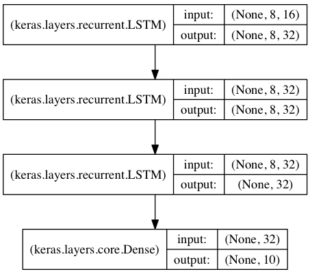

Getting started with the Keras Sequential model
The Sequential model is a linear stack of layers.
You can create a Sequential model by passing a list of layer instances to the constructor:
from keras.models import Sequential
from keras.layers import Dense, Activation
model = Sequential([
Dense(32, input_shape=(784,)),
Activation('relu'),
Dense(10),
Activation('softmax'),
])
You can also simply add layers via the .add() method:
model = Sequential()
model.add(Dense(32, input_dim=784))
model.add(Activation('relu'))
Specifying the input shape
The model needs to know what input shape it should expect. For this reason, the first layer in a Sequential model (and only the first, because following layers can do automatic shape inference) needs to receive information about its input shape. There are several possible ways to do this:
- Pass an
input_shapeargument to the first layer. This is a shape tuple (a tuple of integers orNoneentries, whereNoneindicates that any positive integer may be expected). Ininput_shape, the batch dimension is not included. - Some 2D layers, such as
Dense, support the specification of their input shape via the argumentinput_dim, and some 3D temporal layers support the argumentsinput_dimandinput_length. - If you ever need to specify a fixed batch size for your inputs (this is useful for stateful recurrent networks), you can pass a
batch_sizeargument to a layer. If you pass bothbatch_size=32andinput_shape=(6, 8)to a layer, it will then expect every batch of inputs to have the batch shape(32, 6, 8).
As such, the following snippets are strictly equivalent:
model = Sequential()
model.add(Dense(32, input_shape=(784,)))
model = Sequential()
model.add(Dense(32, input_dim=784))
Compilation
Before training a model, you need to configure the learning process, which is done via the compile method. It receives three arguments:
- An optimizer. This could be the string identifier of an existing optimizer (such as
rmsproporadagrad), or an instance of theOptimizerclass. See: optimizers. - A loss function. This is the objective that the model will try to minimize. It can be the string identifier of an existing loss function (such as
categorical_crossentropyormse), or it can be an objective function. See: losses. - A list of metrics. For any classification problem you will want to set this to
metrics=['accuracy']. A metric could be the string identifier of an existing metric or a custom metric function.
# For a multi-class classification problem
model.compile(optimizer='rmsprop',
loss='categorical_crossentropy',
metrics=['accuracy'])
# For a binary classification problem
model.compile(optimizer='rmsprop',
loss='binary_crossentropy',
metrics=['accuracy'])
# For a mean squared error regression problem
model.compile(optimizer='rmsprop',
loss='mse')
# For custom metrics
import keras.backend as K
def mean_pred(y_true, y_pred):
return K.mean(y_pred)
model.compile(optimizer='rmsprop',
loss='binary_crossentropy',
metrics=['accuracy', mean_pred])
Training
Keras models are trained on Numpy arrays of input data and labels. For training a model, you will typically use the fit function. Read its documentation here.
# For a single-input model with 2 classes (binary classification):
model = Sequential()
model.add(Dense(32, activation='relu', input_dim=100))
model.add(Dense(1, activation='sigmoid'))
model.compile(optimizer='rmsprop',
loss='binary_crossentropy',
metrics=['accuracy'])
# Generate dummy data
import numpy as np
data = np.random.random((1000, 100))
labels = np.random.randint(2, size=(1000, 1))
# Train the model, iterating on the data in batches of 32 samples
model.fit(data, labels, epochs=10, batch_size=32)
# For a single-input model with 10 classes (categorical classification):
model = Sequential()
model.add(Dense(32, activation='relu', input_dim=100))
model.add(Dense(10, activation='softmax'))
model.compile(optimizer='rmsprop',
loss='categorical_crossentropy',
metrics=['accuracy'])
# Generate dummy data
import numpy as np
data = np.random.random((1000, 100))
labels = np.random.randint(10, size=(1000, 1))
# Convert labels to categorical one-hot encoding
one_hot_labels = keras.utils.to_categorical(labels, num_classes=10)
# Train the model, iterating on the data in batches of 32 samples
model.fit(data, one_hot_labels, epochs=10, batch_size=32)
Examples
Here are a few examples to get you started!
In the examples folder, you will also find example models for real datasets:
- CIFAR10 small images classification: Convolutional Neural Network (CNN) with realtime data augmentation
- IMDB movie review sentiment classification: LSTM over sequences of words
- Reuters newswires topic classification: Multilayer Perceptron (MLP)
- MNIST handwritten digits classification: MLP & CNN
- Character-level text generation with LSTM
...and more.
Multilayer Perceptron (MLP) for multi-class softmax classification:
import keras
from keras.models import Sequential
from keras.layers import Dense, Dropout, Activation
from keras.optimizers import SGD
# Generate dummy data
import numpy as np
x_train = np.random.random((1000, 20))
y_train = keras.utils.to_categorical(np.random.randint(10, size=(1000, 1)), num_classes=10)
x_test = np.random.random((100, 20))
y_test = keras.utils.to_categorical(np.random.randint(10, size=(100, 1)), num_classes=10)
model = Sequential()
# Dense(64) is a fully-connected layer with 64 hidden units.
# in the first layer, you must specify the expected input data shape:
# here, 20-dimensional vectors.
model.add(Dense(64, activation='relu', input_dim=20))
model.add(Dropout(0.5))
model.add(Dense(64, activation='relu'))
model.add(Dropout(0.5))
model.add(Dense(10, activation='softmax'))
sgd = SGD(lr=0.01, decay=1e-6, momentum=0.9, nesterov=True)
model.compile(loss='categorical_crossentropy',
optimizer=sgd,
metrics=['accuracy'])
model.fit(x_train, y_train,
epochs=20,
batch_size=128)
score = model.evaluate(x_test, y_test, batch_size=128)
MLP for binary classification:
import numpy as np
from keras.models import Sequential
from keras.layers import Dense, Dropout
# Generate dummy data
x_train = np.random.random((1000, 20))
y_train = np.random.randint(2, size=(1000, 1))
x_test = np.random.random((100, 20))
y_test = np.random.randint(2, size=(100, 1))
model = Sequential()
model.add(Dense(64, input_dim=20, activation='relu'))
model.add(Dropout(0.5))
model.add(Dense(64, activation='relu'))
model.add(Dropout(0.5))
model.add(Dense(1, activation='sigmoid'))
model.compile(loss='binary_crossentropy',
optimizer='rmsprop',
metrics=['accuracy'])
model.fit(x_train, y_train,
epochs=20,
batch_size=128)
score = model.evaluate(x_test, y_test, batch_size=128)
VGG-like convnet:
import numpy as np
import keras
from keras.models import Sequential
from keras.layers import Dense, Dropout, Flatten
from keras.layers import Conv2D, MaxPooling2D
from keras.optimizers import SGD
# Generate dummy data
x_train = np.random.random((100, 100, 100, 3))
y_train = keras.utils.to_categorical(np.random.randint(10, size=(100, 1)), num_classes=10)
x_test = np.random.random((20, 100, 100, 3))
y_test = keras.utils.to_categorical(np.random.randint(10, size=(20, 1)), num_classes=10)
model = Sequential()
# input: 100x100 images with 3 channels -> (100, 100, 3) tensors.
# this applies 32 convolution filters of size 3x3 each.
model.add(Conv2D(32, (3, 3), activation='relu', input_shape=(100, 100, 3)))
model.add(Conv2D(32, (3, 3), activation='relu'))
model.add(MaxPooling2D(pool_size=(2, 2)))
model.add(Dropout(0.25))
model.add(Conv2D(64, (3, 3), activation='relu'))
model.add(Conv2D(64, (3, 3), activation='relu'))
model.add(MaxPooling2D(pool_size=(2, 2)))
model.add(Dropout(0.25))
model.add(Flatten())
model.add(Dense(256, activation='relu'))
model.add(Dropout(0.5))
model.add(Dense(10, activation='softmax'))
sgd = SGD(lr=0.01, decay=1e-6, momentum=0.9, nesterov=True)
model.compile(loss='categorical_crossentropy', optimizer=sgd)
model.fit(x_train, y_train, batch_size=32, epochs=10)
score = model.evaluate(x_test, y_test, batch_size=32)
Sequence classification with LSTM:
from keras.models import Sequential
from keras.layers import Dense, Dropout
from keras.layers import Embedding
from keras.layers import LSTM
model = Sequential()
model.add(Embedding(max_features, output_dim=256))
model.add(LSTM(128))
model.add(Dropout(0.5))
model.add(Dense(1, activation='sigmoid'))
model.compile(loss='binary_crossentropy',
optimizer='rmsprop',
metrics=['accuracy'])
model.fit(x_train, y_train, batch_size=16, epochs=10)
score = model.evaluate(x_test, y_test, batch_size=16)
Sequence classification with 1D convolutions:
from keras.models import Sequential
from keras.layers import Dense, Dropout
from keras.layers import Embedding
from keras.layers import Conv1D, GlobalAveragePooling1D, MaxPooling1D
model = Sequential()
model.add(Conv1D(64, 3, activation='relu', input_shape=(seq_length, 100)))
model.add(Conv1D(64, 3, activation='relu'))
model.add(MaxPooling1D(3))
model.add(Conv1D(128, 3, activation='relu'))
model.add(Conv1D(128, 3, activation='relu'))
model.add(GlobalAveragePooling1D())
model.add(Dropout(0.5))
model.add(Dense(1, activation='sigmoid'))
model.compile(loss='binary_crossentropy',
optimizer='rmsprop',
metrics=['accuracy'])
model.fit(x_train, y_train, batch_size=16, epochs=10)
score = model.evaluate(x_test, y_test, batch_size=16)
Stacked LSTM for sequence classification
In this model, we stack 3 LSTM layers on top of each other, making the model capable of learning higher-level temporal representations.
The first two LSTMs return their full output sequences, but the last one only returns the last step in its output sequence, thus dropping the temporal dimension (i.e. converting the input sequence into a single vector).

from keras.models import Sequential
from keras.layers import LSTM, Dense
import numpy as np
data_dim = 16
timesteps = 8
num_classes = 10
# expected input data shape: (batch_size, timesteps, data_dim)
model = Sequential()
model.add(LSTM(32, return_sequences=True,
input_shape=(timesteps, data_dim))) # returns a sequence of vectors of dimension 32
model.add(LSTM(32, return_sequences=True)) # returns a sequence of vectors of dimension 32
model.add(LSTM(32)) # return a single vector of dimension 32
model.add(Dense(10, activation='softmax'))
model.compile(loss='categorical_crossentropy',
optimizer='rmsprop',
metrics=['accuracy'])
# Generate dummy training data
x_train = np.random.random((1000, timesteps, data_dim))
y_train = np.random.random((1000, num_classes))
# Generate dummy validation data
x_val = np.random.random((100, timesteps, data_dim))
y_val = np.random.random((100, num_classes))
model.fit(x_train, y_train,
batch_size=64, epochs=5,
validation_data=(x_val, y_val))
Same stacked LSTM model, rendered "stateful"
A stateful recurrent model is one for which the internal states (memories) obtained after processing a batch of samples are reused as initial states for the samples of the next batch. This allows to process longer sequences while keeping computational complexity manageable.
You can read more about stateful RNNs in the FAQ.
from keras.models import Sequential
from keras.layers import LSTM, Dense
import numpy as np
data_dim = 16
timesteps = 8
num_classes = 10
batch_size = 32
# Expected input batch shape: (batch_size, timesteps, data_dim)
# Note that we have to provide the full batch_input_shape since the network is stateful.
# the sample of index i in batch k is the follow-up for the sample i in batch k-1.
model = Sequential()
model.add(LSTM(32, return_sequences=True, stateful=True,
batch_input_shape=(batch_size, timesteps, data_dim)))
model.add(LSTM(32, return_sequences=True, stateful=True))
model.add(LSTM(32, stateful=True))
model.add(Dense(10, activation='softmax'))
model.compile(loss='categorical_crossentropy',
optimizer='rmsprop',
metrics=['accuracy'])
# Generate dummy training data
x_train = np.random.random((batch_size * 10, timesteps, data_dim))
y_train = np.random.random((batch_size * 10, num_classes))
# Generate dummy validation data
x_val = np.random.random((batch_size * 3, timesteps, data_dim))
y_val = np.random.random((batch_size * 3, num_classes))
model.fit(x_train, y_train,
batch_size=batch_size, epochs=5, shuffle=False,
validation_data=(x_val, y_val))